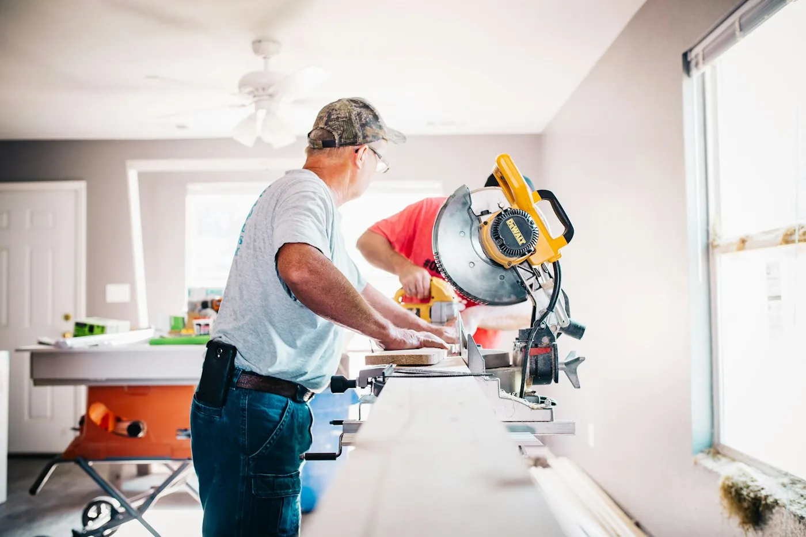

Reforma com preço na hora, prazo no papel e obra limpa.
Banheiro, cozinha, piso e pintura. Responda 4 perguntas e veja quanto fica antes mesmo da visita.

O que a gente promete por escrito
- Preço fechadoO valor do contrato não muda. Se aparecer surpresa debaixo do piso, quem paga somos nós.
- Prazo com multaAtrasou, devolvemos 1% do valor por dia útil de atraso.
- Obra limpaEntulho retirado e chão varrido no fim de cada dia. Você mora durante a reforma.
- Garantia de 5 anosInfiltração e revestimento soltando: voltamos sem custo.
Obras entregues este ano


Quem já reformou
Fizeram o banheiro em 9 dias, como estava no contrato. O Marcos mandava foto todo fim de tarde.
Luciana P. · Setor Bueno · ★★★★★Primeira reforma que não virou pesadelo. O preço foi o mesmo do orçamento até o último centavo.
Rafael M. · Jardim Goiás · ★★★★★

Visita técnica grátis esta semana
Atendemos Goiânia, Aparecida e Senador Canedo. Mande fotos do lugar pelo WhatsApp e já saímos com o orçamento quase pronto.
Agendar visita grátis